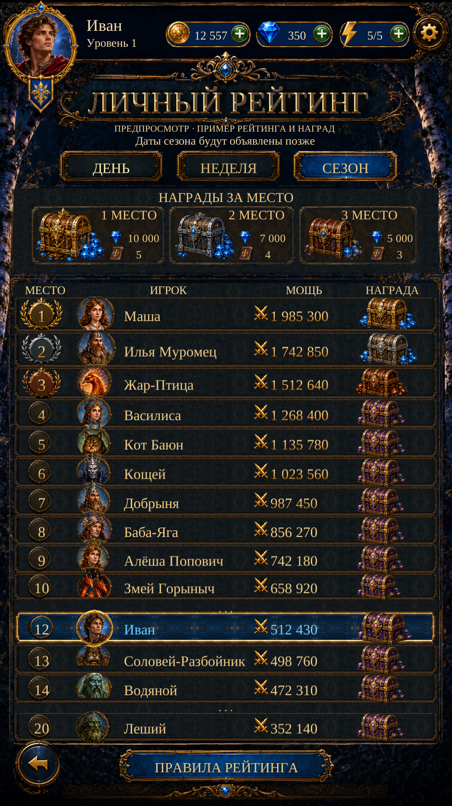

Individual Ranking · Reference Layout R2
Visual Page20 rebuilt using the supplied original: source portraits, medals, reward chests, tabs and frames, with separate scenery and native localized controls. Standings and rewards are labelled examples. The original can be selected below for comparison.
Implementation and checks · Remaining differences · Asset provenance

941×1672 · Русский — actual Unity Play Mode, isolated test save.Latest results:8 Ranking tests and7 Event Detail regressions passed. Scenario:16 successful jobs,58CU. No APK or physical-phone test. Exact font, repaired details and hidden scenery remain approximate.